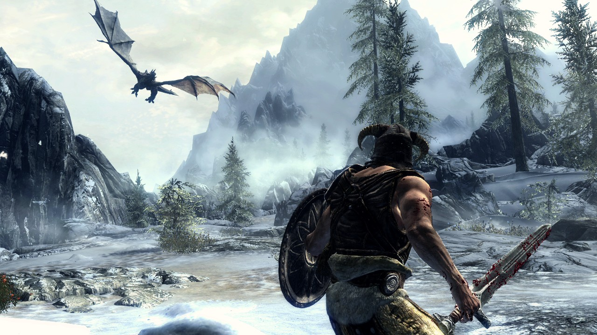

Whether you consider Skyrim or Oblivion better, comes down to play preference. Skyrim is a more modern and polished experience, while Oblivion is a bit more of a classic RPG with more interesting guilds and sidequests.
Learn more about Oblivion Learn more about Skyrim